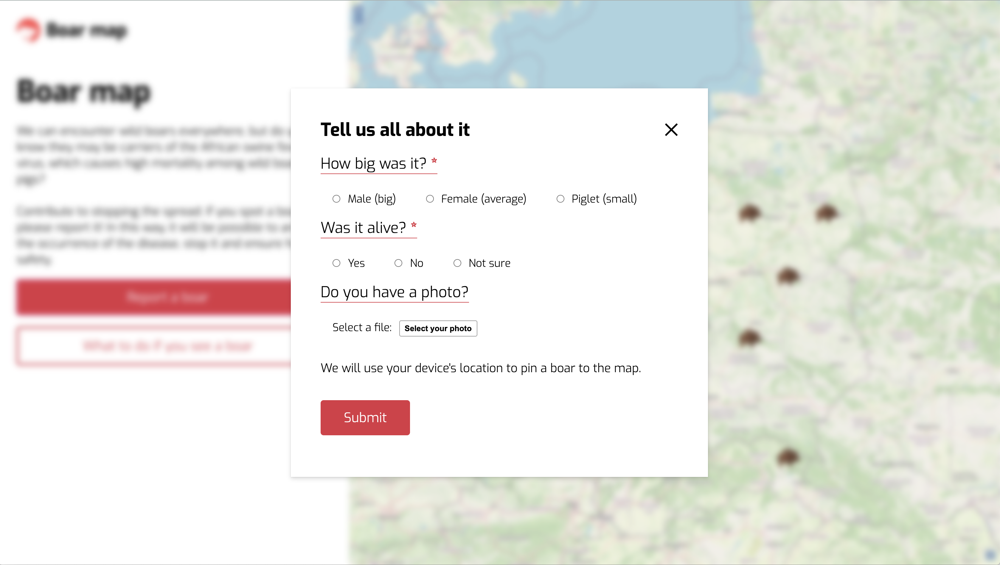
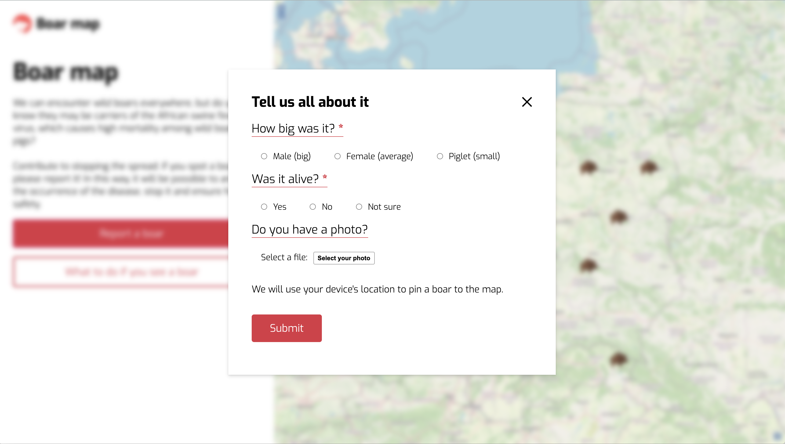

My skills
HTML5 & CSS3
Develop cross-browser and for mobile, know a thing or two on responsive web-design, use Sass, BEM.
JavaScript (ES6)
Enjoy cracking JS coding challenges, kinda like OOP, understand basics of asynchronous programming.
React JS
Love developing apps with React: can write both class and functional components with hooks, manage state and build complex UIs.
Redux
Add basic Redux to my React apps to maintain immutable state and keep my components out of side effects.
npm and Node.js
Use npm to install and run scripts for my projects. Know basics on how to set up a development environment with Node.js.
Jest
Can test with Jest: unit-tests, work with fixtures and even do some woodoo monkey patching.
GitHub
Love GitHub and never forget to git pull. Use conventional commits and branching even in my solo projects.
Gulp and Parcel
Operate Gulp and Parcel to optimize my workflow and bundle projects, including this website.
Design systems
Use design systems in my projects for building better and cleaner interfaces.
My projects
Data grid
February 2021
Comprehensive data-table for unlimited set of data made with Material UI components library. Features include filtering and multi-filtering, sorting, selection, pagination and data editing.
First TypeScript project.
- React
- TypeScript
- Sass
- HTML5
React calculator
January 2021
First self-made React based app.
A simple calculator that supports basic arithmetic calculations on integers. All calculations made using mathjs library. Keyboard friendly! Made with CSS Grid, responsive desktop-first and cross-browser support.
- React
- JavaScript
- Sass
- HTML5
Gdziedzik.pl — wild boars' tracking map
November 2020
Web application made with OpenLayers API.
Main features include: boars pins appearing on the map based on backend data (with main information and photo if available) and interactive form to report a sighting using Geolocation API. Made with BEM, CSS Flexbox, responsive desktop-first and cross-browser support.
Built during HackYeah 2020 hackathon.
Full project presentation (PDF)
- JavaScript
- Parcel
- Sass
- HTML5
 
Coding challenges
October 2020 - current
My coding challenges from different platforms.
View on Github- JavaScript
- Jest
- npm
ROI calculation form (RU)
July 2020
Interactive form to calculate project ROI and generate annual cash flow table, designed and developed for robotics system integrator Inspair. May be used as a framework-like base to build similar forms. First experience of DOM-manipulation and first commercial project.
View on Github- JavaScript
- Gulp
- Sass
- HTML5
- npm
Maintenance work on already existing Russian food-delivery websites. Minor restyling works, mostly CSS (Sass) editing.
- Sass
- HTML5
Interior website
June - July 2020
Multi-page website for the non-existing furniture store. Made with BEM and component-based design, CSS Flexbox and Grid layouts, responsive desktop-first and cross-browser support. Includes CSS animations and vanilla-JS burger-menu. Made as a first self-developed web-page.
View on Github- Sass
- HTML5
- npm
- JavaScript
EY Career events landings (RU)
2019 - 2020
Several of many landing pages for graduate career events of EY Russia. Made with AEM (Adobe Experience Manager) in accordance with EY Global styles.
- AEM